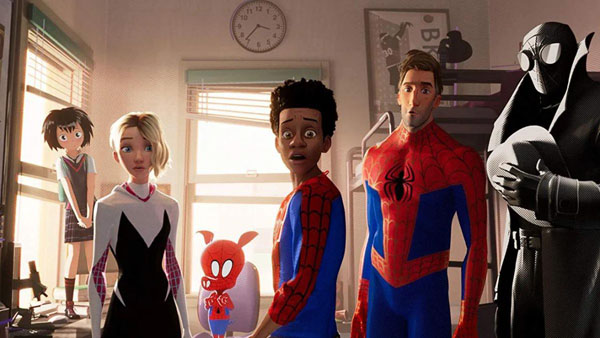

Personajes Principales y Secundarios
En los diferentes universos y sagas de Spider-Man han existido una larga lista de personajes tanto principales como secundarios, ya fuesen
buenos, malos o neutrales. Además, cada uno de estos personajes tenía distintos finales y destinos que dependían del universo en el que
se lo/a viese. Es por eso que aquí veremos una recopilación de los personajes considerados como principales y también secundarios pero que son importantes
Personajes Principales
Personajes Buenos
Estos personajes son esenciales para las historias de Spider-Man, ya que son los que ayudan a definir su vida, sus relaciones y su lucha
contra el crimen.
- Mary Jane " MJ " Watson: Es un personaje ficticio de la saga de películas Spider-Man de Sam Raimi . Basada en el personaje homónimo ,
es interpretada por Kirsten Dunst . En las películas, Mary Jane es la vecina de Peter Parker , su amor de la infancia y su principal interés
amoroso.
- Harry Osborn: Harry es el mejor amigo de Peter Parker (el alter ego de Spider-Man) y Flash Thompson , uno de los exnovios de
Mary Jane Watson , hijo de Norman Osborn , esposo de Liz Allan y padre de Normie y Stanley Osborn.
Es el segundo personaje en asumir el alias del Duende Verde, mientras que uno de sus clones estaba entre los muchos usuarios
de la armadura Iron Patriot como el superhéroe American Son.
- Gwen Stacy: Estudiante universitaria e hija de George y Helen Stacy , Gwen fue el primer interés romántico de Peter tras
su graduación de la preparatoria, antes de ser asesinada por el Duende Verde ( Norman Osborn ). Su muerte ha atormentado a Peter desde
entonces, y las historias publicadas mucho después indican que aún ocupa un lugar especial en su corazón.
- Tía May: May es la viuda de Ben Parker y tía paterna por matrimonio de Peter Parker, quien lleva una vida secreta como Spider-Man.
Ella cuida y apoya a Peter como una figura materna , aunque durante la mayor parte de la historia de Spider-Man, desconocía su vida secreta y lo
consideraba aterrador. En versiones modernas, se sabe que May apoya al héroe y, en raras ocasiones, sabe que es su sobrino o al menos sospecha que
es Peter.
- Tío Ben: El personaje ha sido una parte esencial de la historia de Spider-Man. Su muerte a manos de un delincuente
de poca monta , a quien Spider-Man tuvo la oportunidad de capturar, pero decidió no hacerlo, se ha representado en la mayoría de las
versiones de la historia del origen del héroe como el factor principal que inspiró a Peter a convertirse en Spider-Man. La cita del
tío Ben: Un gran poder conlleva una gran responsabilidad , se ha convertido en la guía moral de Spider-Man
y su lema de vida icónico.
- Jefferson Davis: Es un personaje de apoyo ficticio en historias con Miles Morales, uno de los personajes que asume
el manto de Spider-Man. El personaje, creado por Brian Michael Bendis y Sara Pichelli, apareció por primera vez en
Ultimate Comics: Spider-Man # 1 (noviembre de 2011), que se publicó como parte de la línea de libros Ultimate Marvel de Marvel Comics, que se
encuentran en un universo y continuidad. separado del universo de Marvel mainstream.
- Rio Morales: Es un personaje de apoyo ficticio en historias que presentan a Miles Morales, la segunda persona en
asumir el manto de Spider-Man en el Universo Ultimate Marvel. El personaje, creado por el escritor Brian Michael Bendis y la artista
Sara Pichelli, apareció por primera vez en Ultimate Comics Spider-Man Vol. 2 # 1 (noviembre de 2011), que se publicó como parte de la línea
de libros Ultimate Marvel de Marvel Comics, que se ubican en un universo y una continuidad independientes del Universo Marvel. Rio es una
mujer puertorriqueña que está casada con el afroamericano Jefferson Davis. Trabaja como Administradora de Operaciones del Hospital en el
Hospital General de Brooklyn.
Personajes Neutros
Estos personajes, junto con muchos otros, contribuyen a la rica historia y la complejidad de Spider-Man en los cómics, películas y videojuegos.
- J.Jonah.Jameson:Jameson suele representarse como el editor o editor en jefe del Daily Bugle, un periódico ficticio
de Nueva York. Reconocible por su bigote cepillo de dientes, corte de pelo plano, y siempre presenta un cigarro, lleva a cabo una campaña
de desprestigio contra Spider-Man, refiriéndose frecuentemente a él como una "amenaza" y un criminal, pero ocasionalmente y de mala gana
aliándose con él. Esto generalmente se debe a su creencia profunda en las fuerzas del orden y las agencias gubernamentales. Por lo tanto,
Jameson desprecia a los superhéroes por trabajar fuera del sistema. En losprimeros cómics, así como en la mayoría de las interpretaciones
de los medios, emplea al fotoperiodista Peter Parker para tomar fotografías de Spider-Man con la esperanza de atraparlo en medio de una
mala acción, sin saber que Peter es el superhéroe mismo.
- Norman Osborn (antes de convertirse en el Duende Verde):Es un personaje ficticio que aparece en los cómics estadounidenses publicados por Marvel Comics, cuyas principales
características son las de un multimillonario sociópata. Como jefe industrial amoral de Oscorp, Norman estuvo expuesto a una fórmula
experimental que mejoró sus habilidades físicas e intelecto, pero también lo llevó a la locura.
- Flash Thompson:Es un jugador de fútbol americano de la escuela secundaria, que intimida sin piedad a su compañero de
clase de la escuela secundaria llamado Peter Parker, pero admira mucho al Hombre Araña, una ironía en la que el superhéroe se lleva algo
de gratificación. Con el tiempo, él y Peter se convierten en amigos cercanos en la universidad, después de que Flash haya madurado. Tras
graduarse, se alista en el Ejército de los Estados Unidos, pero sus experiencias de combate lo atormentan y lo llevan al alcoholismo. Después
de perder ambas piernas en la guerra de Irak, se convierte en el superhéroe Agente Venom tras vincularse al simbionte Venom, que controla
con drogas. Al final, durante una discusión con Eddie Brock sobre Venom, se convierte en el nuevo anfitrión del simbionte Anti-Venom.
- Ursula Ditkovich: Era la hija del Sr. Ditkovich , amigo y vecino de Peter Parker en la película Spider-Man 2
de 2004. Su personaje fue creado para la película y nunca apareció en ninguno de los cómics de Marvel.
- Sr.Ditkovich: Es el casero de Peter Parker y el padre de Ursula Ditkovich. Su personaje fue creado para las películas
y no ha aparecido en ningún cómic de Marvel, ni antes ni después.
- Dr. Curtis "Curt" Connors (antes de convertirse en el Lagarto):El Doctor Connors era un genetista que investigaba la
capacidad de ciertos reptiles para volver a crecer extremidades faltantes. Desarrolló un suero a base de ADN del lagarto que permitiría a los
humanos hacer lo mismo y lo probó en sí mismo, con la esperanza de recuperar el brazo derecho que le faltaba; en cambio, se transformó en un
lagarto antropomórfico salvaje. Muchas historias que presentan al Lagarto tratan sobre los efectos que tiene en la vida y la psique del
Doctor Connors, ya que este último vive con el temor constante de que el Lagarto algún día se apoderede su cuerpo de forma completa e
irreversible. Debido a esto, trabaja incansablemente para encontrar una cura permanente para su personalidad alternativa,
para gran preocupación de su esposa Martha Connors y su hijo Billy, pero también contrasta marcadamente con otros enemigos de Spider-Man
que a menudo seenorgullecen de sus poderes y los usan deliberadamente de manera irresponsable.
- George Stacy: Es un personaje secundario en la serie de Spider-Man de Marvel Comics. Él es el padre de Gwen Stacy y un
excapitán de policía del Departamento de Policía de la ciudad de Nueva York. Stacy es un gran defensor de Spider-Man, a menudo defiende al
superhéroe cuando otros lo acusan, y por lo tanto sirve como una personalidad de aluminio para otro personaje relacionado con
Spider-Man, J. Jonah Jameson.
- Eddie Brock (antes de convertirse en Venom): Es un periodista que expone públicamente la identidad de un hombre que cree que es un asesino
en serie, el Comepecados, solo para encontrar su reputación arruinada cuando el Hombre Araña captura al verdadero asesino. Deshonrado y suicida con un
creciente odio irracional hacia el Araña, Eddie entra en contacto con un simbionte alienígena, rechazado por Peter Parker. El simbionte se vincula con él
y se convierten en Venom, juntos buscando venganza contra su enemigo mutuo.
Villanos Principales
- Duende Verde (Norman Osborn):Norman adopta la identidad del Duende Verde con el objetivo de convertirse en el líder del crimen organizado
en la ciudad, y tiene la intención de consolidar su posición al derrotar a Spider-Man. Actuando por su cuenta como el duende, o mediante el
empleo de otros super-criminales como el líder, acosaría a Spider-Man muchas veces, pero no lograría su objetivo. Para descubrir la identidad
secreta de su némesis, Osborn expone a Spider-Man a un gas que anula los sentidos del héroe arácnido. Esto le permite a Osborn acechar a
Spider-Man hasta que se entera de que su némesis es Peter Parker. Mientras Parker se dedica a la vida civil, Osborn sorprende y golpea a
Parker con una granada de asfixia, llevándose al joven a su base costera. Después de desenmascararse con Parker, este último lo incita a
contar cómo se convirtió en el Duende, y usa el tiempo para liberarse. En la batalla subsiguiente, Spider-Man accidentalmente golpea a Osborn
en una masa de cables eléctricos, borrando su memoria. Sintiendo pena por su némesis, y deseando evitar la vergüenza que le sobrevendría a
la familia Osborn, Spider-Man destruye el disfraz de Duende en el incendio resultante y le dice a las autoridades que Osborn perdió
su memoria mientras ayudaba a derrotar el Duende.
- Duende Verde (Harry Osborn): Luego de que el Duende Verde de Norman Osborn muriese a causa de ser empalado por su propio
Duende planeador, Harry Osborn, queriendo proteger la identidad de su padre, se quita el cuerpo del traje de Duende Verde de Norman Osborn
para esconderse. Culpando a Spider-Man por el asesinato de su padre, Harry, enojado y desequilibrado mentalmente, jura venganza. Al haber
heredado la compañía de su padre, Harry logra recuperar el negocio. Un día, para su sorpresa, encuentra un disfraz de Spider-Man en el departamento
de Peter Parker y se da cuenta de que su mejor amigo es el hombre al que culpa por la muerte de su padre. Utilizando el equipo antiguo de
su padre, Harry se enfrenta a Peter como el segundo Duende Verde. Este en su batalla con Spider-Man resulta inconsciente y perdiendo la
memoria debido a un fuerte golpe. Luego de un tiempo, Harry Osborn recupera la memoria y recordando el odio que le tenía a su mejor amigo Peter
Parker, tomando de rehén a Mary Jane Watson para que le diga a Peter que cortaba su relación con él. Spider-Man y el Duende Verde vuelven a
pelear, teniendo como resultado a Harry explotando su propia bomba en su cara. Mary Jane Watson es secuestrada por Venom y el Hombre Arena, es
por esto que Peter le fue a pedir ayuda a Harry, haciendo que este último lo rechace hasta el momento en que su mayordomo le dijo la verdad sobre
la muerte de su padre, haciendo recapacitar al Duende Verde y haciendo que termine ayudando a Spider-Man contra los villanos, terminando en la muerte
de Eddie Brock (Venom) y de Harry Osborn (Duende Verde) muriendo justo antes de perdonar a Peter Parker.
- Hombre Arena (William Baker, Flint Marko):Los poderes de Flint Marko provienen de un bombardeo accidental de radiación que este sufrió en una playa cuando
huía de la policía. El resultado de esto provocó que las moléculas de Marko se fundiesen con la de las arena que se encotraba bajo él. La primera vez
que se enfrentó con Spider-man, este le derrotó con una aspiradora industrial. Además de sus diversos crímenes cometidos en solitario, "El Hombre de Arena"
fue miembro fundador de los Seis Siniestros, que frecuentemente combatieron a Spiderman. En la película de 2007 Spider-man 3 está interpretado por Thomas Haden Church.
En ella el Hombre de Arena es un ladrón de poca monta con una hija enferma, que huye de la justicia y acaba en una instalación científica,
donde es desmolecularizado y adquiere sus poderes. Incluso los guionistas de dicha película se toman una licencia cinematográfica de adjudicar
el asesinato del tío de Spider-man a El Hombre de Arena.
- Dr.Octopus (Otto Octavius):Es un científico loco muy inteligente y algo fornido que tiene cuatro apéndices fuertes que se asemejan a los
tentáculos de un pulpo, que se extienden desde la parte posterior de su cuerpo y pueden usarse para varios propósitos. Después de que su arnés
mecánico se fusionara permanentemente con su cuerpo durante un accidente de laboratorio, Octavius se convirtió en una vida delictiva y entró
en conflicto con el superhéroe Spider-Man. Es el fundador y líder de los Seis Siniestros, el primer equipo de supervillanos
en oponerse a Spider-Man.
- Venom (Eddie Brock):El personaje es un extraterrestre sensible simbionte con una forma amorfa, semilíquido, que sobrevive mediante la unión
con un huésped, por lo general humano. Esta forma de vida dual recibe poderes mejorados y generalmente se refiere a sí misma como Venom. El primer anfitrión humano del
simbionte Venom fue Spider-Man, quien finalmente descubrió su verdadera naturaleza nefasta y se separó de la criatura. El simbionte se fusionó con otros
anfitriones, sobre todo Eddie Brock, su segundo y más infame anfitrión, con quien se convirtió en Venom y uno de los archienemigos de Spider-Man.
El personaje más tarde se convirtió en un antihéroe, trabajando tanto con superhéroes como contra ellos. Otros anfitriones notables del simbionte
Venom incluyen al villano Mac Gargan, anteriormente conocido como Escorpión, y Flash Thompson, quien se convirtió en el superhéroe Agente Venom de 2011
a 2016, antes de que Venom regresara a Brock en 2017. El anfitrión más reciente y actual de Venom es el hijo biológico de Brock, Dylan.
- Carnage (Cletus Kasady):El simbionte Carnage generalmente se representa como un descendiente de Venom que es más poderoso que él debido a
la naturaleza de los simbiontes, y es mucho más sociópata y sádica. Al igual que Venom, Carnage ha tenido múltiples anfitriones a lo largo de
los años, pero el más infame sigue siendo el primero, el asesino en serie 'Cletus Kasady', cuya personalidad coincide perfectamente con la del
simbionte. Otros anfitriones incluyen a Ben Reilly, Karl Malus y Norman Osborn.
- El Lagarto (Dr.Curt Connor): Alter ego del Dr. Curt Connor, que se convirtió por error en el lagarto y aunque Spider-Man fue capaz de deshacer la
transformación, el Lagarto seguía siendo parte del subconsciente del Doctor Connors y resurgiría una y otra vez; a menudo conservando la inteligencia
de Connors e intentando reemplazar a la humanidad con unaraza de criaturas reptiles como él.
- Electro (Maxwell Dillon): La historia de fondo del personaje es que era un liniero de una compañía eléctrica que se convirtió en una vida
delictiva después de ser alcanzado por un rayo mientras trabajaba en una línea eléctrica y se convirtió en un capacitor eléctrico viviente. Los
superpoderes de Electro giran en torno al control de la electricidad, que puede absorber para "cargarse" a sí mismo y volverse más poderoso,
adquiriendo habilidades adicionales como vuelo, fuerza sobrehumana y velocidad.
- Mysterio (Quentin Beck): Él es un ex artista de efectos especiales, ilusionista y actor que recurre al crimen. Es uno de los enemigos más duraderos
del superhéroe Spider-Man y pertenece al colectivo de adversarios que componen su galería de villanos. También es miembro fundador del equipo de
supervillanos Seis Siniestros, y ha luchado contra otros héroes, incluido Daredevil.
- Kraven el Cazador (Sergei Kravinoff): Sergei es típicamente retratado como un reconocido cazador de caza mayor cuyo objetivo en la vida es
superar al Hombre Araña para demostrar que es el mejor cazador del mundo.Aunque a menudo confía demasiado en sus propias habilidades,
de las que se jacta, posee un gran sentido del honor y trata a sus adversarios como iguales hasta que se demuestre lo contrario. Debido a
esto, Kraven también ha sido representado como un antihéroe y aliado de la Chica Ardilla y, a veces, del propio Hombre Araña, a quien llegó
a respetar profundamente por las numerosas veces que derrotó a Kraven.
- Kingpin (Wilson Fisk): Uno de los señores del crimen más temidos, peligrosos y poderosos del Universo Marvel, generalmente representado como el señor
del crimen de la ciudad de Nueva York, fue presentado como un adversario de Spider-Man, pero luego pasó a amenazar a otros héroes de Marvel,
convirtiéndose en el archienemigo de Daredevil, así como un enemigo recurrente de Punisher y de su hija adoptiva Echo.
- El Buitre (Adrian Toomes): Toomes es un genio inventivo pero maníaco que diseñó un traje especial que le permite volar a grandes velocidades.
Después de dedicarse a una vida delictiva, se convirtió en un enemigo recurrente del superhéroe Spider-Man y miembro fundador de los Seis Siniestros.
Otros personajes también han tomado el manto.
- Six Sinister: Los Seis Siniestros son un grupo de supervillanos que aparecen en los cómics de Spider-Man publicados por
Marvel Comics. Se extraen de la lista de enemigos de Spider-Man. La encarnación original del grupo fue organizado por el Doctor Octopus y estaba
formado por Buitre, Electro, Mysterio, Hombre de Arena y Kraven el Cazador. Si bien el equipo ha tenido diferentes miembros en sus diversas iteraciones
a lo largo de los años, el Doctor Octopus generalmente siguió siendo el líder en todas las versiones. A partir de esta unión, vinieron otras muchas, con
diferentes líderes y componentes, entre ellas cabe destacar a los Doce Siniestros.
- Rhino (Aleksei Sytsevich): El personaje es un matón ruso que se sometió a un procedimiento experimental que le dio una cubierta de
piel artificial y una fuerza sobrehumana. Rebelándose contra los científicos responsables de su transformación, Rhino usó sus nuevos poderes
para convertirse en un criminal exitoso y pronto se enfrentó a superhéroes como Spider-Man y Hulk. El personaje generalmente se presenta
como un bruto tonto, capaz de una gran destrucción, pero que en última instancia es fácil de engañar.
- Merodeador (Aaron Davis): también conocido como Prowler y Tío Aaron , es un antagonista importante en el largometraje
número 18 de Sony Pictures Animation, Spider-Man: Into the Spider-Verse , la primera entrega de la trilogía Spider-Verse. Era el hermano de
Jefferson Davis y tío de Miles Morales , que operaba en secreto como un eminente sicario y principal ejecutor del Kingpin. hasta los eventos
de la película.
- La Mancha (Jonathan Ohnn): La Mancha es el antagonista principal de la Trilogía Animada del Spider-Verse. Originalmente era
un científico que trabajaba en el súper colisionador de Kingpin, pero cuando Spider-Man lo hizo estallar mientras aún estaba adentro,
la combinación de eso y la sustancia encerrada que sostenía cambió y mutó su cuerpo dándole muchas habilidades a costa de afectar su la vida de
manera trágica. Culpó a Miles por el accidente y ahora quiere venganza.
Otros Spider-Man(Spider-Verse)
- Miles Morales:Es un superhéroe y el tercer Spider-Man predominante en aparecer en los cómics estadounidenses publicados
por Marvel Comics , creado en 2011 por el escritor Brian Michael Bendis y la artista Sara Pichelli , junto con el aporte del entonces editor en
jefe de Marvel, Axel Alonso. El hijo adolescente afro-puertorriqueño de un padre afroamericano y una madre afro-puertorriqueña, Miles Morales
es el segundo Spider-Man en aparecer en Ultimate Marvel , un sello con una continuidad separada del Universo Marvel principal llamado
Ultimate Universe Tierra-1610, apareciendo por primera vez en Ultimate Fallout #4 , luego de la
muerte de Ultimate Peter Parker . Apareció en la serie de cómics Ultimate Comics: Spider-Man , y después de que Marvel terminara el
sello Ultimate en 2015, Miles se convirtió en un personaje del Universo Marvel principal Tierra-616, comenzando con historias
bajo la marca All-New, All-Different Marvel que debutó ese mismo año, con la contraparte original de Miles en la Tierra-616, el villano
Ultimatum , presentado en Spider-Men II en 2017.
- Spider-Gwen: El personaje es una variante de El Hombre Araña, una versión de universo alternativo de Gwen Stacy. Ella reside en
la "Tierra-65", donde, en lugar de Peter Benjamin Parker, Gwen Stacy fue mordida por la Araña Radiactiva, conduciéndola en una carrera como
la Spider-Woman de su mundo. El personaje también tiene que lidiar con varios enemigos, incluidas las versiones Tierra-65 de Matt Murdock, Frank Castle
y Susan Storm. Es representada por albergar gran parte de la personalidad y los conflictos de Peter, además de compartir sus poderes y habilidades.
- Miguel O´Hara (Spider-Man 2099):Es el líder de la Sociedad Arácnida multiversal, que se esfuerza por mantener intacto el canon.
Como Spider-Man, Miguel viviría muchas aventuras junto a su Inteligencia Artificial, Lyla. Con ambos protegiendo Nueva York, tiempo después de
convertirse en Spider-Man, Miguel descubriría el multiverso y, desde entonces, decidiría monitorearlo junto a Lyla.Al darse cuenta de que los eventos del
Supercolisionador en Tierra-1610 produjeron fisuras multiversales que dejaron a varios villanos varados en universos ajenos, Spider-Man encontraría la
Sociedad Arácnida para evitar el colapso del multiverso y enviar a los villanos de vuelta a sus respectivos universos.Tras proteger el multiverso de diversas
amenazas, Miguel decidió reemplazar a su contraparte de un universo alternativo para criar a su hija tras la muerte de Miguel tras ser asaltado por un
ladrón. Sin embargo, este evento causó la destrucción de este universo y de sus habitantes. Gravemente traumatizado, Miguel comenzó a trabajar en exceso,
hasta el punto de dejar atrás al hombre sarcástico y feliz que una vez fue.Luego de descubrir sobre los Eventos Canon y su significado para la vida de la Gente Araña , Miguel
se volvería más estricto con la Sociedad Araña, prohibiendo a todos los miembros visitar a Miles Morales de la Tierra-1610 por descubrir que este último
era una anomalía.Tiempo después, Miguel y el resto de la Sociedad Arácnida entrarían en conflicto con Spot y Miles Morales cuando este último
intentó salvar a su padre al descubrir su inminente muerte. Aunque intenta hablar con él al principio, Miles no le da la oportunidad, lo que obliga a Miguel
a revelar que Miles es una anomalía. Miles termina escapando a lo que cree que es su universo. Miguel, junto con Jessica y Ben, deciden encontrar a
Miles para evitar que salve a su padre y, en el proceso, provoque accidentalmente la desaparición de su universo.
- Peter B. Parker: El mentor renuente de Miles, una versión desaliñada y más adulta del héroe.
- Spider-Man Noir: Una versión alternativa oscura y monocromática de Peter Parker de la serie Marvel Noir, un universo
ambientado en los años treinta.
- Spider-Ham: Una versión alternativa divertida de Spider-Man de un universo de animales antropomorfos, que una vez fue una araña,
mordida por un cerdo radioactivo.
- Peni Parker: Una joven japonesa de un universo futurista similar al anime que copilotea un traje biomecánico con una araña
radioactiva con la que comparte un enlace telepático.
- Spider-Byte (Margo Kess):Es una superheroína de Tierra-22191, un universo donde todo el mundo forma
parte de un universo digital interactivo conectado a Internet. En este, Margo lucha como la heroína Spider-Byte, haciendo frente a ciberdelincuentes y
manteniendo una identidad secreta online.
- Spider-Punk (Hobie Brown):Se convirtió en el justiciero enmascarado conocido como Spider-Man como una forma de luchar
contra el régimen opresivo de la Tierra-138 .Luchando contra el gobierno corrupto de su ciudad, Spider-Man se ganó muchos enemigos y aliados
gracias a su personalidad rebelde e intrigante. Además de su apariencia, la ciudad, sus villanos y la mayoría de sus aliados lo apodaron
Spider-Punk. Finalmente se afilió formalmente a la Sociedad Arácnida hasta que renunció después de ayudar a Miles a escapar, iniciando una
persecución caótica en Nueva York.
- Spider-Man India (Pavitr Prabhakar): Pavitr proviene de Tierra-50101, en donde ejerce su identidad de Spider-Man luego de seis meses
del incidente en que fue picado por una Araña Radiactiva. Es presentado cuando Miles Morales sigue Gwen Stacy a Mumbatan para luchar contra La
Mancha, presentándose como el Spider-Man local. Durante esa batalla se suponía que se desataría un Evento Canónico en el que el padre de su novia moriría
por un derrumbe, pero fue interrumpido por Miles. Más tarde se mostró junto con el equipo formado por Gwen para salvar a Miles luego de que éste quedara
varado en Tierra-42.
- Spider-Woman (Jessica Drew): Jessica es una de las agentes participantes de la Spider-Sociedad. Parece contar con un puesto
relativamente alto dentro de la misma. No se sabe mucho de ella, salvo que proviene de Tierra-404, que está en una relación estable y está
esperando un hijo. Durante los eventos de Across the Spider-Verse convence a Miguel O'Hara de acoger a Gwen Stacy en la sociedad luego de verla en
acción, a quien termina acogiendo como su discípula. Pero más tarde se convertiría en una antagonista secundaria, persiguiendo a Miles Morales bajo las
órdenes de Miguel a fin de proteger al multiverso.
- LYLA : LYrate Lifeform Approximation, mejor conocida por su acrónimo LYLA, es un asociado y compañero holográfico de
Miguel O'Hara en Nueva York, y uno de los principales fundadores de la Sociedad Arácnida

Fuente:
Wikipedia
Contacto:
Muruaga
Otras Páginas de Spider-Man: